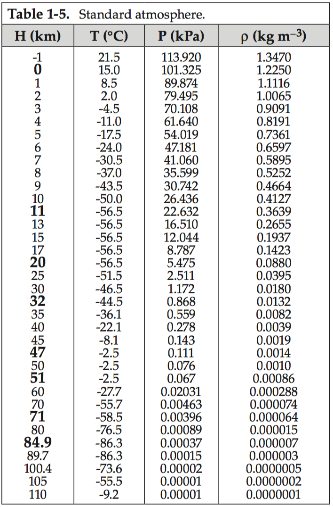
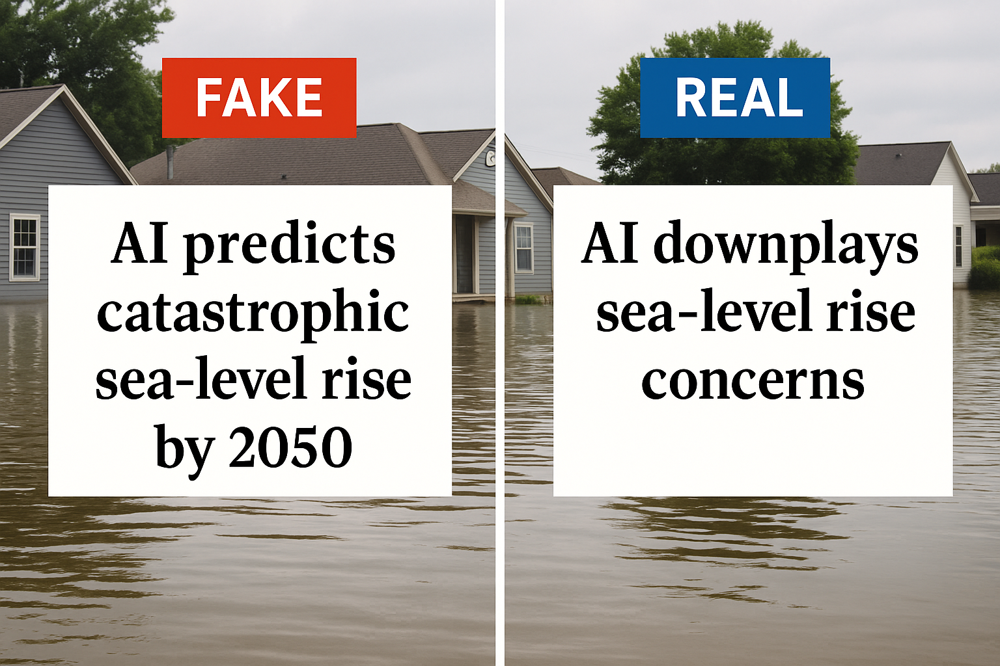
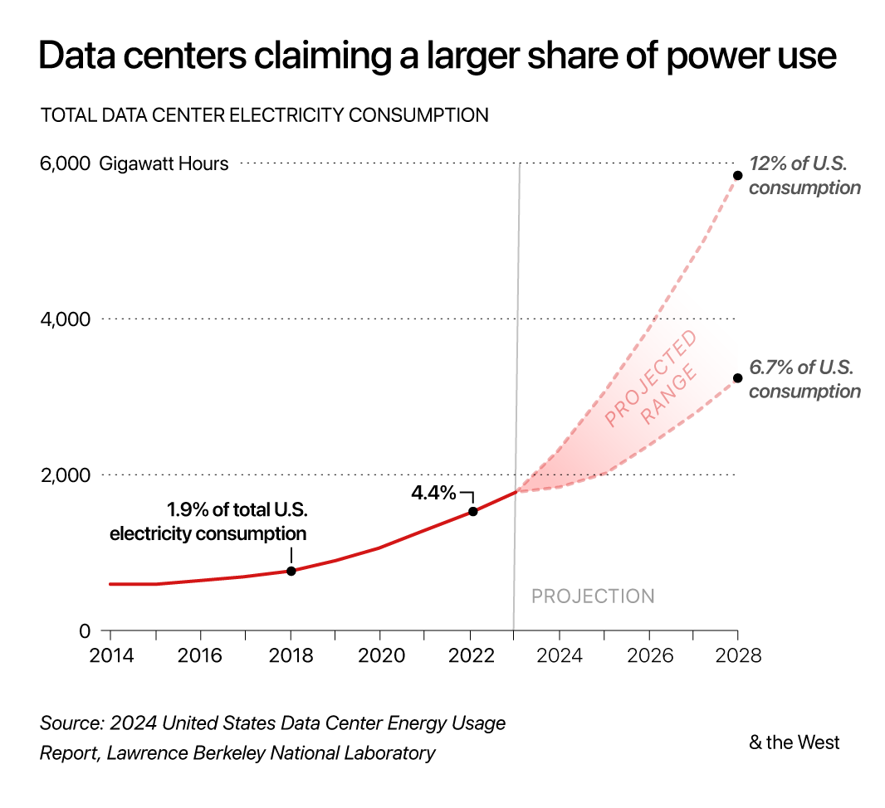
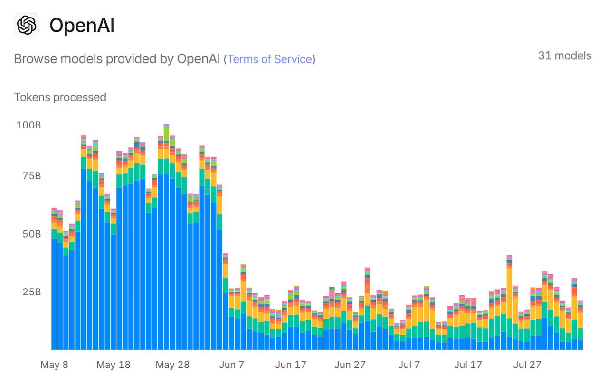

Appendix C Workbook Week 2: LLMs
C.1 How to Build Complixity into a Problem
We briefly discussed the need to layer complexity when trying to model. Lets work through an example of that.
Banksy’s Balloon Model
 Have you ever wondered what happens to a helium filled balloon that is released?
What we will do is build a mathematical model of the balloon to help answer this question.
Have you ever wondered what happens to a helium filled balloon that is released?
What we will do is build a mathematical model of the balloon to help answer this question.
What controls the height at which a the balloon will climb?
\[B(z) = f(\]
Abstraction
What is the simplest form of the problem we could solve?
What assumptions could we make to help us get started?
Neutral Buoyancy
Given the table below and the density information about helium. What height would the balloon get to?
At sea-level conditions (about \(T = 288\,\text{K}\), \(P = 101{,}325\,\text{Pa}\)):
- Helium density:
\[ \rho_{\text{He}} \approx 0.1785\ \text{kg/m}^3 \]

Evaluate and then add complexity
Does this feel right?
What assumptions did we make that might have been too simplistic?
What math model could we apply to add complexity?
Ideal Gas Law
The ideal gas law relates the pressure, volume, temperature, and number of moles of a gas:
\[ PV = nRT \]
Definitions
- \(P\): Pressure of the gas (Pa or atm)
- \(V\): Volume of the gas (m³ or L)
- \(n\): Number of moles of gas (mol)
- \(R\): Ideal gas constant
- \(8.314\ \text{J·mol}^{-1}\text{·K}^{-1}\) (SI units)
- \(0.08206\ \text{L·atm·mol}^{-1}\text{·K}^{-1}\) (common chemistry units)
- \(8.314\ \text{J·mol}^{-1}\text{·K}^{-1}\) (SI units)
- \(T\): Absolute temperature (Kelvin, K)
Notes
- The equation assumes an ideal gas (no inter-molecular forces, particles take up negligible space).
- Works well for helium and other light gases at normal temperatures and pressures.
- Can be rearranged into useful forms, e.g. density:
Flexible Balloon
Let’s let the volume of the balloon change - removing the rigid balloon requirement.
\[ PV = nRT \]
Rearranging for n:
\[ n = \frac{PV}{RT} \]
We know n can’t change as the balloon isn’t leaking. So we can think of the balloon in two places
\[ n_{msl} = n_{top} \]
so plug the rest in
\[ \frac{P_1V_1}{T_1}=\frac{P_2V_2}{T_2} \]
Ask ourselves what changes based on out assumptions
What is going to happen to the volume of the balloon as it climbs?
What happens to the density of helium if the volume increases? \[ \rho = \frac{M}{V} \]
Evaluate - Does this make sense?
The next thing is to model where the balloon will land. This tool uses the near term forecast as well as the balloon’s parameters to determine the most likely trajectory.
C.2 LLMs and Modeling Support
C.2.1 Learning Objectives
By the end of this week, students should be able to:
- Explain what large language models (LLMs) are and how they can support simulation and coding.
- Apply prompt engineering techniques to improve model development.
- Use LLMs to re-frame and clarify environmental modeling challenges.
- Critically evaluate when and how it is appropriate to use AI tools in science.
- Incorporate LLMs into workflows for reproducibility, documentation, and troubleshooting in R.
C.2.2 Coding warmup
Pseudo-code and r script activity
Create a script that fits a line of best fit to the following string of 10 numbers
- 6,1,7,2,3,3,9,3,3,0
Create the flexibility in the code to fit a nth order polynomial of your choosing.
Before you run build an expectation
- What do expect the graph to look like with n=1
- n=5
- n=9
- n=12
What evaluation tools/outputs could you create so that you can ‘test’ the output?
Compare your expectations with your output
Compare your outputs with the people around you
C.2.3 What is a Large Language Model
1 min Discussion What is a LLM and how does it work?
Class Discussion What are the dangers of highly parameterized model?
Pros and cons of parameter counts?
C.2.4 Pros and Cons of High-Parameter Models
High-parameter (or “high-complexity”) models — like very high-degree polynomials, deep neural networks with many layers, or regression models with lots of predictors — have clear advantages and drawbacks.
C.2.4.1 ✅ Pros
- Flexibility & Expressiveness
- Can capture very complex relationships, including nonlinear patterns that simple models would miss.
- For example: a 9th-degree polynomial can fit 10 points exactly.
- Can capture very complex relationships, including nonlinear patterns that simple models would miss.
- Low Training Error
- With enough parameters, the model can drive error on the training set down to nearly zero.
- Useful if your goal is interpolation of the given data rather than generalization.
- With enough parameters, the model can drive error on the training set down to nearly zero.
- Captures Subtle Structure
- Sometimes, especially with rich datasets, complexity helps reveal real underlying trends that simpler models would smooth over.
C.2.4.2 ❌ Cons
- Overfitting
- The model fits noise as if it were signal.
- Predictions on new data are often unstable and inaccurate.
- The model fits noise as if it were signal.
- Interpretability
- High-degree polynomials or models with many coefficients are hard to interpret or explain.
- Coefficients may be large, unstable, or counter-intuitive.
- High-degree polynomials or models with many coefficients are hard to interpret or explain.
- Numerical Instability
- High-order polynomials can produce
NAs or huge coefficients due to ill-conditioning.
- Small changes in input lead to large swings in output.
- High-order polynomials can produce
- Computational Cost
- More parameters = more computation, longer training, and sometimes risk of convergence issues.
- Generalization Risk
- High training accuracy doesn’t guarantee real-world usefulness.
- Models may fail badly outside the range of training data.
- High training accuracy doesn’t guarantee real-world usefulness.
C.2.5 Parameters in Large Language Models (LLMs)
Large Language Models (LLMs) are defined in part by the number of parameters they contain — the trainable weights in their neural networks. These parameters are like knobs the model adjusts during training to learn patterns in data.
C.2.5.1 ⚙️ Parameters in Modern LLMs
- GPT-2 (2019) → ~1.5 billion parameters
- GPT-3 (2020) → 175 billion parameters
- PaLM (Google, 2022) → 540 billion parameters
- GPT-4 (2023) → parameter count not officially disclosed, but estimates suggest hundreds of billions to over a trillion
- GPT-4 Turbo (2023, OpenAI API) → optimized variant, size undisclosed, but still in the “hundreds of billions” range
- Anthropic’s Claude 3 (2024) → not public, but assumed similar scale (hundreds of billions)
- Gemini Ultra (Google DeepMind, 2024) → also undisclosed, estimated trillion-scale
C.2.5.2 📊 What “Parameters” Mean
- Each parameter is just a number (a weight) that influences how input tokens get transformed through the layers of the neural net.
- More parameters = more capacity to model complex relationships, but also:
- Requires more data to train
- Much more compute (training GPT-3 took thousands of GPUs for weeks)
- Can increase risk of overfitting if not carefully regularized
- Requires more data to train
C.2.5.3 🚀 Trend in LLM Growth
- 2018–2020 → billions of parameters
- 2021–2023 → hundreds of billions
- 2024 onward → trillion+ parameter models (but with a shift toward efficiency — smaller models trained better)
Contextualizing these large numbers 1 million seconds –> 11.6 days 1 billion seconds –> 31.7 years (~1.5 of your lifetimes) 1 trillion seconds –> 31,700 years (~1,500 your lifetimes)
C.2.5.4 📑 Table: LLMs and Parameter Counts
| Model | Year | Parameters (approx.) | Notes |
|---|---|---|---|
| GPT-2 | 2019 | 1.5B | First widely known OpenAI LLM |
| GPT-3 | 2020 | 175B | Major leap in scale |
| PaLM (Google) | 2022 | 540B | Pathways Language Model |
| GPT-4 | 2023 | 100B–1T (est.) | Exact number undisclosed |
| GPT-4 Turbo | 2023 | 100B+ (est.) | Optimized API variant |
| Claude 3 (Anthropic) | 2024 | 100B+ (est.) | Scale similar to GPT-4 |
| Gemini Ultra (Google) | 2024 | 1T+ (est.) | Trillion-scale model |
✅ Summary: Modern LLMs like GPT-4, Claude 3, or Gemini are likely running in the hundreds of billions to trillions of parameters range.
C.2.6 Capabilities and Limits of LLMs
Discussion: What are the Capabilities and Limits of LLMs
Reflection Prompt
Capabilities and Limits of LLMs
✅ Capabilities of LLMs
- Generate readable text in many styles
- Scientific summaries
- Conversational explanations
- Adapt tone for peers, policymakers, or the public
- Scientific summaries
- Produce and troubleshoot code
- Works across multiple languages (R, Python, MATLAB)
- Draft starter scripts, find syntax errors, explore alternatives
- Works across multiple languages (R, Python, MATLAB)
- Summarization tools
- Condense long articles, datasets, or equations
- Highlight key insights and trends
- Condense long articles, datasets, or equations
- Translate technical content into plain language
- Make specialized knowledge understandable to non-experts
- Support communication of environmental science to diverse audiences
- Make specialized knowledge understandable to non-experts
⚠️ Limits of LLMs
- Hallucination
- Can produce text that sounds plausible but is factually wrong
- Bias in training data
- May reproduce stereotypes or skew perspectives
- Lack of true reasoning/understanding
- Predicts patterns statistically, not by scientific comprehension
- Explanations may oversimplify or omit key assumptions
- Predicts patterns statistically, not by scientific comprehension
- Reproducibility challenges
- Same prompt can yield different outputs
- Hard to fully standardize in scientific workflows
- Same prompt can yield different outputs
- Which of the capabilities described here could have supported your work?
- Which limitations would you need to watch out for?
- How might you balance the efficiency of using an LLM with the need for accuracy and scientific rigor?
C.2.7 LLMs in environmental modeling workflows
Activity: Explain a Complex Model with Stepwise Prompting
We’ll use stepwise (chain-of-thought–style) prompting to unpack a very complex partial differential equation into clear, audience-appropriate language without asking the AI to reveal its private reasoning. The goal is to force a structured, term-by-term explanation and surface assumptions.
Note: we are purposefully using a complex example here so that we can really see the value and dangers of utilizing a LLM for environmental modeling.
Model
The Advection–Diffusion (or Dispersion) Equation for pollutant transport in a river:
\[
\frac{\partial C}{\partial t} = D \frac{\partial^2 C}{\partial x^2} - v \frac{\partial C}{\partial x} - kC
\]
- \(C\): concentration at position \(x\) and time \(t\)
- \(D\): diffusion coefficient (mixing)
- \(v\): flow velocity (downstream transport)
- \(k\): decay rate (removal)
Step 1 — Your Own Explanation
Write a plain-language explanation for a non-scientist audience (e.g., a community group). If you have no idea whats going on - take a guess. Go term by term and see if you can decipher whats going on.
Step 2 — Baseline AI Explanation Ask an LLM for a plain-language explanation. Save the response.
Baseline prompt:
Explain the equation below in plain language for a non-scientist audience.
\[
\frac{\partial C}{\partial t} = D \frac{\partial^2 C}{\partial x^2} - v \frac{\partial C}{\partial x} - kC
\]
Keep it to 6–8 sentences.
Take a second here and compare your result with those at your table? Are thy identical?
Step 3 — Stepwise Prompting (Structured Sections)
Now force structure so the AI unpacks complexity term-by-term and surfaces assumptions.
Stepwise prompt template (copy-paste)
Explain the equation below using labeled sections. Do not show your internal reasoning; present only your final explanation.
Sections (use headings):
1) Term-by-term meaning — explain each term in one sentence.
2) Physical interpretation — connect each term to a river process with a brief analogy.
3) Assumptions — list key modeling assumptions (e.g., dimensionality, parameter constancy, uniform mixing).
4) Units & parameters — specify typical units for \(C, D, v, k\).
5) Edge cases — describe what happens if \(D=0\), \(v=0\), or \(k=0\).
6) Plain-language summary — 3 sentences for a public audience.
Equation:
\[
\frac{\partial C}{\partial t} = D \frac{\partial^2 C}{\partial x^2} - v \frac{\partial C}{\partial x} - kC
\]
Step 4 — Compare & Critique
- Clarity: Which version (baseline vs. stepwise) is clearer and why?
- Completeness: Did the stepwise version expose assumptions or units the baseline missed?
- Accuracy: Note any incorrect claims or overconfidence.
Most importantly - which version did you learn something from?
Step 5 — Constraint Refinement Re-prompt with tighter constraints to match a specific audience.
Audience-tuning examples
- Policy brief style (≤150 words, 8th-grade reading level).
- Technical appendix style (include parameter ranges and citations placeholder).
- Infographic caption style (≤90 words, 3 bullets + 1 summary sentence).
How did it do translating complex ideas?
Extension (optional) Ask the AI to propose a simple diagram description (no image needed): axes, arrows for diffusion/advection, and a decay curve. Use this as a storyboard for a figure you might create later.
C.3 Friday Discussion - AI, Society & the Environment
Students will rotate through 6 stations, discussing and writing responses to each prompt.
Station 1 – Environmental Applications
Prompt:
How could LLMs help in environmental science (climate modeling, biodiversity tracking, sustainability research)?
| Use | Description / Findings | Role of AI/LLMs | Citation |
|---|---|---|---|
| Automated ecological data extraction | LLMs used to parse ecological literature 50× faster than humans, with > 90% accuracy for categorical data. | Text mining & knowledge extraction | Nature (2024) |
| Biodiversity commitments vs renewables tradeoffs | LLM + GIS framework to compare biodiversity promises vs real-world impacts in renewable energy projects. | Synthesizing documents with spatial data | Purdue (2024) |
| Policy & governance support | LLM-based chatbot assisting with biodiversity treaty policy interpretation and decision-making. | Policy Q&A, summarization & interpretation | Nature (2025) |
| Land-use / biodiversity predictions | Cambridge “Terra” AI tool predicts biodiversity impacts of land-use, supporting policy tradeoffs. | Modeling + scenario analysis | Cambridge (2025) |
| Biodiversity & conservation | AI helps with species detection, habitat mapping, and biodiversity understanding. | Pattern recognition (images, acoustics, mapping) | OSU Imageomics (2025) |
| Risks & benefits review | Review article on how LLMs can support environmental participation but also bring risks. | Framing debates, generating text & synthesis | ACS EST (2023) |
Station 2 – Risks in Science & Policy
Prompt:
What are the risks if AI models mislead scientists, policymakers, or the public about environmental issues?

Station 3 – Environmental Footprint of AI
Prompt:
LLMs require huge amounts of energy and water to run. Is their environmental cost justified by their benefits? Why or why not? 
Water Use

Sources: https://watercalculator.org/; Lawrence Berkeley National Labs
| Scenario | Liters per person per year | People needed to reach 1B liters/year |
|---|---|---|
| Direct household use | ~114,000 L | ~8,800 people |
| Full water footprint (direct + virtual) | ~2,842,000 L | ~350 people |
Station 4 – Learning & Academic Integrity
Prompt:
How should students and researchers use AI responsibly in their work? Where’s the line between help and cheating?

Tokens processed - why the drop in the June?
Station 5 – Equity & Bias
Prompt:
Who risks being excluded? How might biases in LLMs affect society and science?
| Disparity / Exclusion / Bias | How / Why | Solution? |
|---|
Station 6 – Future of Work & Society
Prompt:
How might AI change jobs, communication, and decision-making in the next 10 years? What should never be automated?